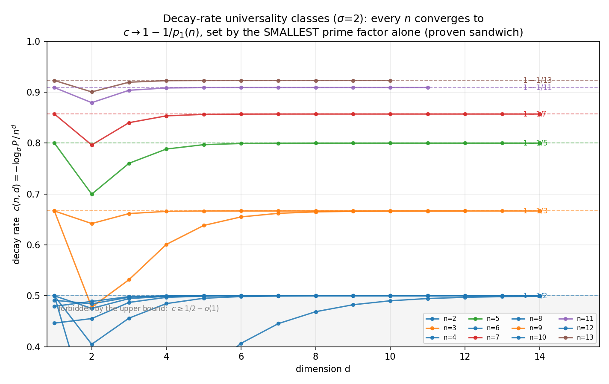
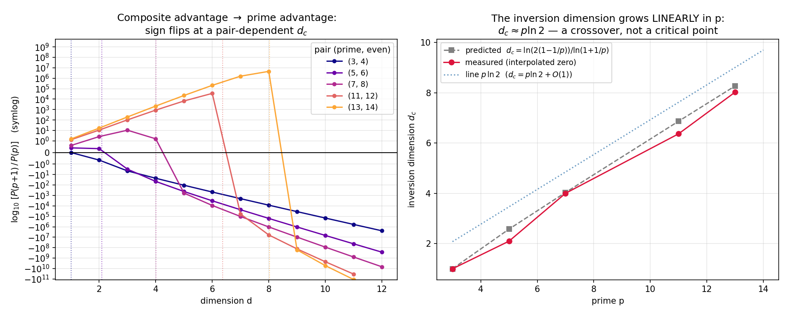

All numbered results, including the closed-form enumeration and the prime-tight lower bound, are formally verified in Lean 4 with Mathlib, backed by a public repository and an audit build.
Abstract
A configuration of a cellular automaton on the $d$-dimensional torus $\mathbb{Z}_n^d$ is shift-symmetric if it is fixed by some nonzero translation. Banda, Caughman, Cenek, and Teuscher (Chaos 29, 063120, 2019) enumerated these configurations in two dimensions and drew dynamical and algorithmic consequences. We extend their results to every dimension. We give an explicit closed-form enumeration for all $n$, $d$, and alphabet sizes $σ$, in which the two-dimensional coefficients $1$, $p+1$, and $p$ become $r_d(p,v)=p^{\binom{v}{2}}\binom{d}{v}_p$, with $\binom{d}{v}_p$ the Gaussian binomial; it extends to configurations with a prescribed number of active cells and to all finite abelian groups. The case of prime $n$ recovers, in complement form, a result of Castillo-Ramirez and Gadouleau; the multi-prime closed form and the dynamical consequences beyond the stabilizer inclusion are new. We prove a lower bound attained exactly when $n$ is prime, and upper bounds, among them $(2^d-1+2\log_2 n)\,σ^{n^d/2}$. As $d$ grows, the symmetry probability decays as $σ^{-c\,n^d}$ with $c\to1-1/p_1(n)$, set solely by the smallest prime factor of $n$, and the symmetry advantage of the side $p+1$ over a prime side $p$ inverts within an explicit window around $d_c(p)\approx p\ln 2$. Under the necessary hypothesis of translation-equivariant neighborhoods, shift-symmetry is irreversible, the per-prime symmetry ranks never decrease, and non-symmetric tasks are unsolvable from symmetric inputs. We give a detection algorithm with worst-case cost $O(n^d\sum_{p\mid n}\frac{p^d-1}{p-1})$ and an average-case analysis, exact for each subgroup test. The mathematical content of every numbered statement is formally verified in Lean 4, and the correspondence between each theorem, lemma, proposition, and corollary and its formal statement was audited by hand.
Problem
Banda et al. counted shift-symmetric configurations of 2D cellular automata on tori, i.e. configurations fixed by a nonzero translation, and drew dynamical consequences. The extension to arbitrary dimension d, alphabet size, and finite abelian groups was open, and several naive 2D generalizations fail.
Approach
A closed-form enumeration is derived by inclusion–exclusion over lines in p-torsion subspaces, using Möbius inversion on subspace lattices, so the coefficients become Gaussian-binomial expressions. Lower and upper bounds, decay asymptotics, irreversibility under translation-equivariant CA, and a detection algorithm follow. All 370 frozen statements are machine-checked in Lean 4 with Mathlib, numerical claims are proved via exact integer certificates, and statement fidelity was audited by hand.
Results
Closed-form counts hold for all n, d, and σ. The lower bound is tight exactly at prime n, and an upper bound with prefactor (2^d−1+2log₂n)σ^{n^d/2} is proved. The decay rate tends to 1−1/p₁(n), and the prime-versus-(p+1) advantage inverts near d≈p ln 2. The Lean development comprises 3036 theorems relying only on the standard axioms.

Figure 3: Decay-rate universality classes (Proposition 10.1 ): the measured rate c(n,d)=-\log_{\sigma}P^{\mathrm{unif}}_{n^{d}}/n^{d} at \sigma=2 for 2\leq n\leq 13 , plotted against d (the exact formula, evaluated numerically). Every lattice side converges to the level 1-1/p_{1}(n) set by its smallest prime factor alone; all even n collapse onto the extremal class c=1/2 , the floor permitted by T

Figure 4: The inversion law (Proposition 10.2 , Remark 10.3 ; \sigma=2 ; the exact formula, evaluated numerically). Left: the ratio \log_{10}\bigl[P^{\mathrm{unif}}_{(p+1)^{d}}/P^{\mathrm{unif}}_{p^{d}}\bigr] for the prime–even pairs (p,p{+}1) , p\in\{3,5,7,11,13\} , flips sign at a pair-dependent inversion dimension (symlog scale; dotted verticals mark the interpolated zeros). Right: the measured